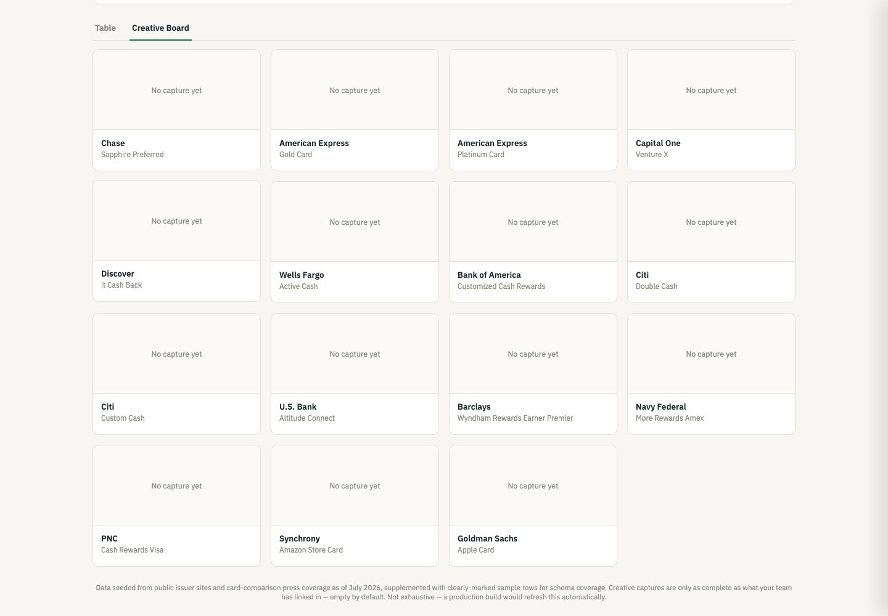
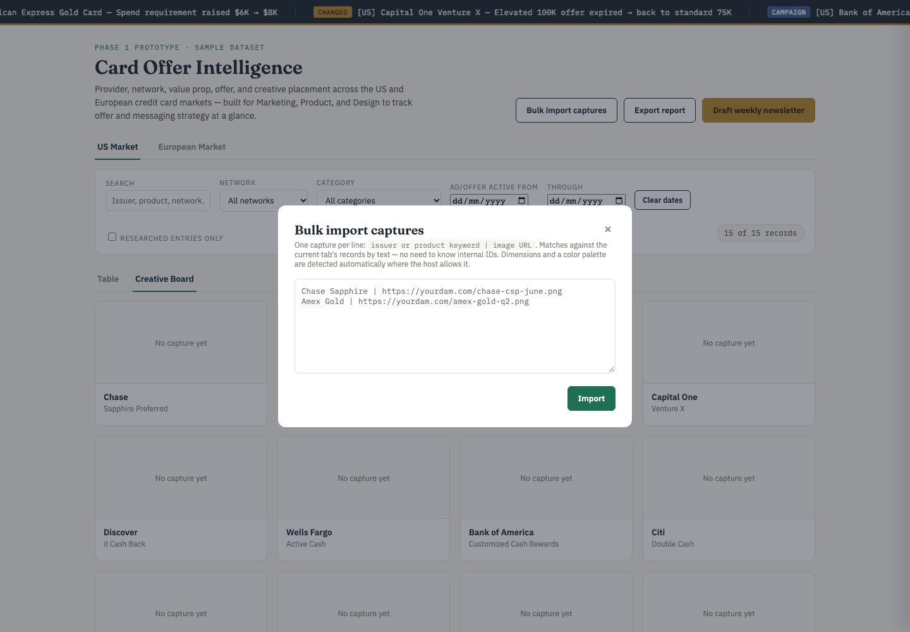
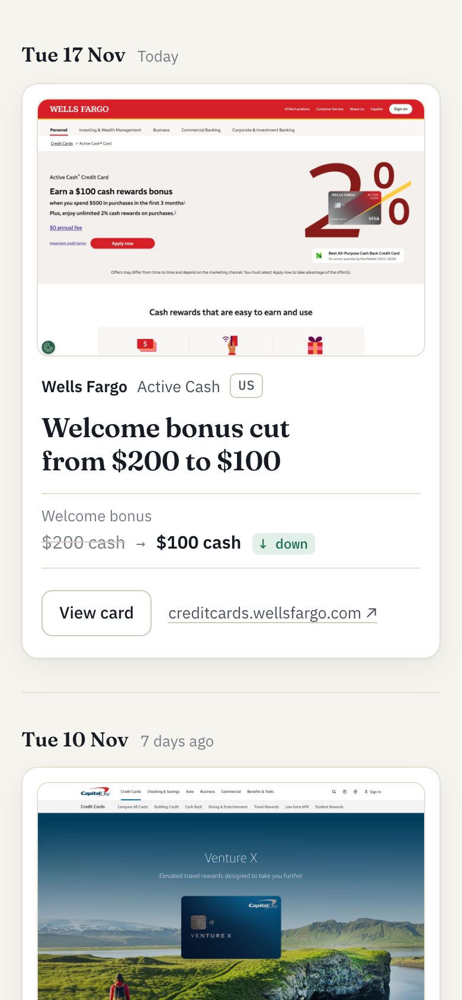
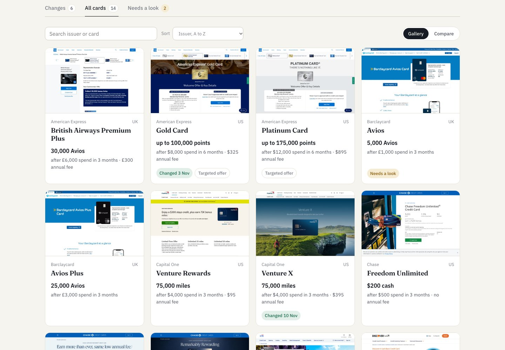

Case study
Tracking competitor credit card offers
We needed to know what competitors were offering new cardholders. We gathered it by hand, and a person checked every figure. I built a scanner that finds and compares the offers, and a dashboard that shows each change next to a screenshot of the page.
Where we started
Offers gathered by hand
The four facts we cared about on each card were the welcome bonus, the spend needed to earn it, the time allowed and the annual fee. We also wanted to see the creative each issuer used to sell the offer.
We found all of this by hand. It took a lot of time, and every figure needed a person to check it, because one wrong digit in a bonus or a fee makes a comparison worthless. At 14 cards and four facts each, that is 56 figures to keep right.
I first built a working prototype of this at Expedia in spring 2025, and work on it continued through the end of the year. Internal changes and reorganisations kept delaying it, so I rebuilt it in 2026.
Phase 1
A dashboard on top of the manual work
The first dashboard gave us somewhere to look at the data. It had a table and a creative board, and it could draft the weekly newsletter for senior leaders. It didn't reduce the work behind it. Its offer numbers came from a tool I had first built in Claude, and five of its 21 rows were placeholders labelled as illustrative. The screenshots still had to be found by hand and pasted in through a bulk-import box.



What the first scan found
The July data and the live pages
When the scanner first ran in November I compared it with the July data. Six cards were in both, and four of them showed a different offer or figure on the issuer's own page.
| Card | July dataset | Live page, November |
|---|---|---|
| Chase Sapphire Preferred | 100,000 points | 75,000 points |
| American Express Platinum | $695 annual fee | $895 annual fee |
| Wells Fargo Active Cash | $200 bonus | $100 bonus |
| Discover it Cash Back | Led with Cashback Match | Leads with a $200 bonus |
The spec started from the idea that issuers often change only the amount and leave every other word on the page as it was. So the scanner compares the figures themselves.
The scanner
A scan twice a week
Twice a week the scanner opens each card page in a real browser, as a customer would see it. It reads the welcome offer into the four facts and compares them with the last scan, one at a time. A redesigned page with the same figures isn't flagged. A change to a single figure is, and the scanner keeps a screenshot of that page.
I still want a person checking what it finds. The scanner does the looking and the comparing. Each change in the dashboard sits next to the screenshot and the issuer's own wording, so checking it takes a few seconds. Pages it can't read with confidence go to a separate list and aren't reported as changed or unchanged.
The first version needed a CSS selector for every page, and those broke whenever an issuer redesigned. The current one finds the offer by reading the page in order, so a new card needs only a link.
The dashboard
What I designed
The first screen
It opens on what changed since the last scan. A quiet week says so, and the full list of cards is one tab away.
Screenshots beside the numbers
Each change shows the before and after values next to a screenshot of the live page, with the issuer's wording underneath.
Plain wording
The scanner compares fields with names like bonusAmount. The dashboard and the emailed report both say "Welcome bonus cut from $200 to $100", and both take that sentence from the same piece of code.
Direction of change
Changes are marked with an arrow up or down. I left out red and green because a competitor raising a bonus isn't good or bad news in itself.
The result
What it looks like now


This is the demo. Everything in it comes from a real scan except the change history, which is simulated so the feed has something in it. The live dashboard shows no changes yet.



Limits and next steps
What it doesn't cover yet
It reads public offers. Personalised offers behind a login or an eligibility check are out of reach, and where a page says "as high as" the dashboard labels the figure as a ceiling. Bank of America and NerdWallet both turned automated requests away, so I left them out. The scanner checks each site's robots.txt before it fetches a page.
The first dashboard could draft the weekly newsletter. This one can't yet, and the emailed report covers part of that once email is switched on.
Next I'd like to track offer creative across paid social and display, where most new campaigns appear first, and to alert the people who own each competitor relationship when their cards move. The spec left paid social and display out on purpose because they need a different kind of tool, so that would be a separate piece of work.